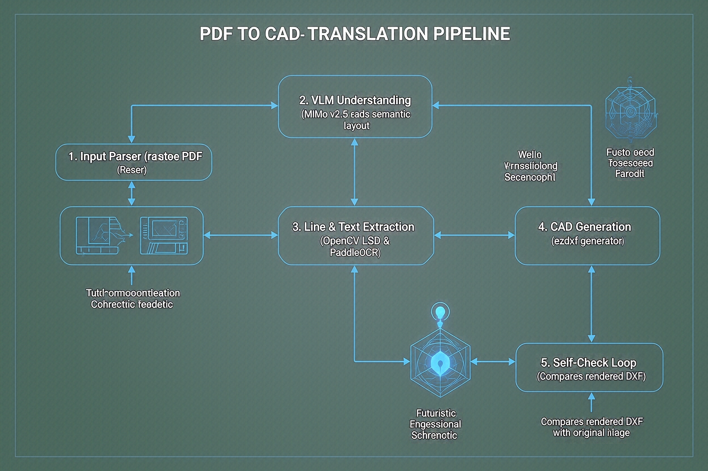

在工程建设、机械制造及工业设计领域，存在大量历史沉淀的 PDF 或 JPG 格式图纸。将这些非结构化的二维图像重新绘制为 CAD（DXF/DWG）格式通常依赖人工描图，存在效率低下、成本高昂且容易出错的问题。本技术方案旨在设计一款智能转绘脚本，实现从 PDF/JPG 图纸到高精度可编辑 CAD 图纸的全自动转换。
核心交付目标：
为满足上述需求，系统设计为以下五层串联及循环自纠错架构：
系统自动检测输入文件。若为矢量 PDF，直接提取其底层的原生矢量图元（如线段、圆弧、路径和文本），以此作为基准，精度最高；若为扫描 PDF 或 JPG，则将其转为高 DPI 的标准图片矩阵，送入 AI 识别轨。
利用最新的多模态视觉模型对图纸进行整体宏观理解。提取图纸的核心信息：图框边界、比例尺区域、标注文本与对应的尺寸线指引线、常用图例符号（如门、窗、标高、粗糙度符号等）。输出结构化的 JSON 语义拓扑图，作为下一层几何化匹配的约束框架。
使用 OpenCV 的 **LSD（Line Segment Detector）** 算法和**霍夫变换**识别出极高精度（亚像素级）的直线段与圆弧。调用 **PaddleOCR（结合工程字体专有微调）** 提取全部数值和标注文字，并将文字框与其空间上靠近的尺寸线进行空间绑定映射。
利用 Python **ezdxf** 库创建原生可编辑 DXF 文件。系统根据语义识别出的图层分配规则创建层结构（标注层、轮廓层、中心线层等），还原对应的线型、颜色和 ANSI 填充样式。采用代数约束求解器，对未标注的部分通过已知标注推导出的比例系数进行反向换算对齐。
制图完成后，使用渲染引擎将 DXF 栅格化为与输入图片相同 DPI 的图像。进行像素级与几何特征（边缘）级别的对比，计算**结构相似性（SSIM）**与**倒角距离（Chamfer Distance）**。将差异区域的坐标和偏离向量反馈至第 3、4 层，进行迭代微调，直到达到设定的阈值。

在扫描像素层面，虚线和中心线是由一系列零散点或短线段组成的。单纯使用 OpenCV 轮廓拟合会将其拆解为数百条微小的独立实线，导致生成的 CAD 极其冗余且不可用。
攻关方案：系统在 Layer 2 通过 VLM 提取轴线分布（通常为中心线）和隐藏轮廓分布（通常为虚线）。在 Layer 3 进行几何合并，计算共线短线段的间距和周期。如果其符合特定的虚线或点划线模板，则在 Layer 4 中合并为一条完整的单一连贯直线，并赋予 CAD 原生的虚线/中心线线型（Linetype）。
许多古旧图纸仅标注了关键尺寸，其余细节尺寸需要人工量取并按比例折算，AI 极易在此处引入缩放累积误差。
攻关方案：系统提取出所有“已知标注文字的值 (V)”与其对应的“像素尺寸长度 (P)”。通过线性最小二乘法拟合得出最合理的图纸全局/局部缩放系数关系公式：Scale = V / P。对于未标注的像素几何路径，直接套用此 Scale 参数反向推导物理世界尺寸，确保在物理坐标系下 100% 对齐。
简单的图像重叠对比会由于线宽、字体差异导致无法收敛，产生错误的无限迭代。
攻关方案：采用分级对齐策略。首先通过霍夫变换对齐两幅图像的定位孔或主边框，消除平移与旋转偏差。对比时过滤掉文字与标注符号（只对比主线框）。对比误差通过差异质心算法确定偏移位置，若发现缺失，在 DXF 中对应位置增补对应类型的线段；若位置偏移，直接修正坐标参数。当连续两次迭代 SSIM 提升小于 0.1% 时，自动触发停机保护。
本项目的开发与实施计划划分为以下四个阶段：
| 阶段 | 核心任务 | 交付成果 | 周期 |
|---|---|---|---|
| Phase 1: 管道与骨架 | 基础解析器搭建，集成 pdfplumber。LSD 基础直线提取，ezdxf 基础图元导出。 | 可以把简单 JPG 直线转换并导出成基础 DXF 文件的 Python 原型脚本。 | 3天 |
| Phase 2: 语义分析层 | MiMo v2.5 视觉接口打通，实现图纸标注识别、比例尺提取，建立图纸的尺寸-空间拓扑约束数据库。 | 具备自动识别工程字体、文字与尺寸线关联、多层结构化 JSON 输出的语义理解模块。 | 2天 |
| Phase 3: 约束求解与闭环 | 比例约束求解器编写（解决比例反推）。自检对比反馈模块搭建，构建迭代修正主循环。 | 具备未标注尺寸折算能力、自渲染对比修正、SSIM 精度评估报告生成的完整纠错版转绘软件。 | 2天 |
| Phase 4: 封装与工程化 | 命令行（CLI）集成，支持批量处理与日志，优化 Windows/Linux 多系统兼容性。 | 一键转绘脚本工具包（包含可独立运行的 EXE 及开发文档）。 | 1天 |